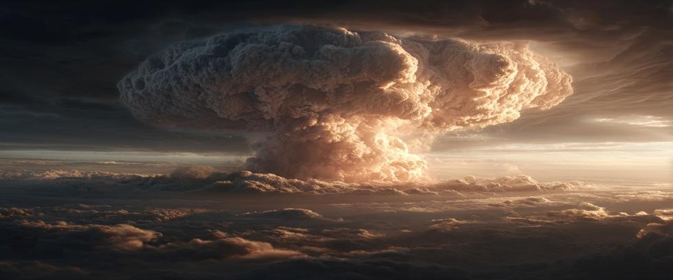

Since the dawn of the atomic age, our civilization has been held at risk by nuclear weapons. In some respects, the threat of nuclear war diminished when the Cold War ended. But in other ways, the risk has increased dramatically.
More countries than ever before have nuclear arsenals. Some speak aggressively about using them against enemies. The Cold War may be over, but America and Russia still maintain civilization-ending nuclear arsenals amidst deteriorating relations and the looming end of the New START treaty – the world’s only remaining nuclear arms control agreement.
The reality is that, with the growing number of nuclear-armed nations, nuclear weapons are less controlled than ever before. Each country has interests and motivations that may clash with others. It’s also alarming how very close we have already come to a nuclear war, incidents that average every ten years or less, that we publicly know about. How long can luck like that hold?
But another category of risk exists called Broken Arrows. These mostly involve mishaps in handling or transporting nuclear weapons, but luck has favored us in this case as well. Several of those events would have killed millions had our luck run out.
The Illusion of Control
Broken arrows decisively expose the illusion of control. Who truly believes that so many dangerous incidents with nuclear weapons do not lay bare the fallacy of wishful thinking? It stands to reason, and mathematical probability, that the big one will eventually strike, if only because it can. Will it be twenty years from now? Ten years? Tomorrow? No one knows.
Scattered bombs, lost warheads, ballistic missile submarines that crash violently together at sea, each unaware the other was there. Not to mention the conventional explosives in an atomic bomb that blew a seventy-foot hole in a South Carolina family’s backyard. Or the Mark 39 hydrogen bombs that fell to ground after a B-52 strategic bomber broke up over North Carolina.
Those are but a fraction of known broken arrow events – each caused by human error, mechanical failure, or miscommunication. And each one reminds us just how fragile the concept of control is when dealing with nuclear weapons. It’s the stakes. Risks that might be acceptable with conventional weapons are insanely reckless with nukes.
Decades of Secrecy and Denial
The US military borrowed the term broken arrow from its initial use as a coded message warning that a ground unit was being overrun. Today, it means any accident involving nuclear weapons that does not create the risk of nuclear war.
There have been many. The list includes crashes, fires, radiation contamination, the loss of nuclear weapons, and more. It’s a bureaucratic way of saying something went terribly wrong, but a horrible tragedy was thankfully avoided.
Officially, more than thirty such incidents are acknowledged by the US government. Unofficially, experts believe the number is much higher, hidden behind decades of secrecy and denial.
The First Broken Arrow
The first publicly known nuclear weapons accident occurred on February 13, 1950. A B-36 bomber with a Mark 4 atomic bomb developed engine trouble during a training mission in the Pacific Northwest.
To lighten the aircraft, the crew jettisoned the bomb into the ocean before bailing out. The conventional explosives detonated upon impact, but the plutonium core was replaced with a practice core made of lead – thereby preventing a 31-kiloton nuclear explosion.
The weapon remains somewhere off the coast of British Columbia, a reminder that even a training mission can have serious consequences when nuclear weapons are involved.
Tybee Island
In 1958, a 3.8-megaton hydrogen bomb disappeared in the ocean near Savannah, Georgia. Fearing his plane might crash after colliding midair with a fighter jet, the B-47 bomber pilot ordered a Mark 15 hydrogen bomb released into the waters off Tybee Island.
Despite an exhaustive ten-week search with divers and sonar, the weapon was never found. Government officials say it poses little risk, but the plutonium core and about 80kg of highly enriched uranium are still down there, possibly awaiting electronic advancements able to locate them.
Mars Bluff
Just a month later, another B-47 bomber on a training mission accidentally released a Mark 6 atomic bomb over Mars Bluff, South Carolina. The conventional explosives detonated on impact, blowing a seventy-foot crater in a local family’s backyard.
Although the house was leveled, and several others were damaged, it’s fortunate that no one was killed. But removing the core for training purposes had again prevented a nuclear explosion – this time up to 160 kilotons, or more than fifteen times the power of the Hiroshima bomb.
The bottom line? A similar accident could have happened with any one of the hundreds of live hydrogen and atomic bombs carried at the time.
Goldsboro
Perhaps the worst such incident occurred in January 1961, when a B-52 loaded with two Mark 39 hydrogen bombs broke apart over Goldsboro, North Carolina.
One of the bombs deployed its parachute and descended intact. But investigators were shocked to later find that three out of four safety devices had failed. Only a cheap, low-voltage switch had prevented a 3.8 megaton explosion powerful enough to destroy New York City – with much of Long Island, Connecticut, and New Jersey thrown in for good measure.
Secretary of Defense Robert McNamara later called it, “by the slightest margin of chance alone” that the catastrophe was avoided. The second bomb buried itself deep in a muddy field, but the fissile package was never completely recovered. The Air Force eventually terminated the search after purchasing the land and fencing it off to prevent bad actors from digging it up.
Palomares
Some Broken Arrows were immediately obvious. In 1966, a B-52 bomber collided with a refueling tanker over Palomares, Spain. Four hydrogen bombs fell to the ground.
The conventional explosives in the two bombs detonated on impact, scattering plutonium across the countryside. Another landed intact, and the fourth was recovered in the Mediterranean Sea after a thorough search lasting three months.
Lady Luck again.
Thule Air Base
Two years after Palomares, another B-52 carrying four hydrogen bombs crashed near Thule Air Base in Greenland. The aircraft caught fire during an emergency landing, detonating the conventional explosives and scattering plutonium across the Arctic ice.
Cleanup was perilous. Workers in extreme cold collected contaminated snow and debris by hand, packing it into barrels for shipment back to the US. Even today, traces of plutonium are still embedded in sheet ice.
The Danish government responded by banning US flights carrying nuclear weapons over its territory. The Cold War may be over, but some ‘fallout’ remains literally frozen in place.
Lost in the Deep
Many nuclear weapons are still missing. Officially, they are considered “lost without critical nuclear components.” But some did contain critical nuclear components that were never recovered.
Submarine incidents have happened as well. The USS Scorpion sank in 1968 with two nuclear torpedoes aboard. The Soviet Union’s K-219 ballistic missile submarine suffered a similar fate in 1986, along with 38 thermonuclear warheads. Both remain lost at sea with the fissile plutonium and weapons-grade uranium they contain.
Imperfect Systems and Nuclear Risk
Broken Arrows expose the fallible side of nuclear strategy—the mistakes, the accidents, the mechanical failures. They tell us that systems so critical they must be perfect are anything but.
Each incident reinforces a haunting truth: Our control over technology able to destroy our civilization and kill nearly every human being on Earth, is not reliable. Yet procedures to mitigate that risk are often reactive rather than proactive, a problem only amplified by secrecy.
New Technology, New Vulnerabilities
Technological advancements have made nuclear arsenals more secure in some ways, but less so in others. Old vulnerabilities were replaced by new ones, and complexity itself breeds problems of its own.
Modern software-driven command and control systems, satellite malfunctions, communications failures, and sophisticated cyber attacks are among the infinite number of ways that nuclear command and control systems are vulnerable. Does anyone believe that infinite possibilities can really be defended against?
Rolling the Dice
The lesson across seventy years of nuclear history is painfully clear: No system is ever perfect. But the incredible stakes involved with nuclear weapons demand perfection.
Nuclear-armed states promise control, but need only examine their own archives to see how their promise is false. And for each acknowledged incident, many others undoubtedly lie buried under decades of classification and denial.
The only sure way to eliminate Broken Arrows is to eliminate nuclear weapons themselves. Anything less is a roll of the dice with potential consequences like the world has never before seen.
Not Our Strategy
At Our Planet Project Foundation, luck is not our strategy. We believe instead that the history of Broken Arrows stands as a testament to chance – the silent guardian that granted us life in the past.
Each incident revealed that mathematical probabilities cannot be ignored forever. That a terrible price will eventually be paid if we try. But we don’t have to go there. Not when the horrors of nuclear war cannot happen if nuclear weapons are eliminated.